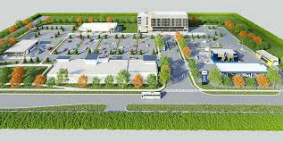

Naawi Oodena
Where is Naawi Oodena located and what is around it?
Naawi Oodena is the largest urban reserve in canada it is located near the river hights and tuxedo area of Winnipeg MB.Naawi Oodena is near Outlet mall wich is one of the 8 major malls in winniepg MB. The area is also massive the 159.71 acresis being put in great use. The area is very holesome and very nice also has very nice houses and apartments also tons of dealerships also has lots of religoues places such as churches temples and sinagages.
A litle historical background Abut this place is it used to be called fort osborne barracks that was closed june 2004 also treaty 1 got it in aug 30 2019. This place was also very important becasue indiginous people benn trying for a long time to get land back.
The video below talks about the
big milestone that was achived on December 16 2022.
The former kapyong barracks was officially converted to Naawi Oodena.
Lets explore the community fetures.What is fun to do in the area?
In theare of south tuxedo theyhave a popularpark known as the
assaniboin park wich is very big has grills camp fires play
structure for kids also nearby there is the assinaboin zoowich
is know fo having lots of animals such as a lion, polar bears,
owls,seals ect.Also in the are there is the tuxedo gold course
with 18 holes also there is a mini golf course.
Lets explore the community fetures.What is fun to do in the area?
In theare of south tuxedo theyhave a popularpark known as the assaniboin park wich is very big has grills camp fires play structure for kids also nearby there is the assinaboin zoowich is know fo having lots of animals such as a lion, polar bears, owls,seals ect.Also in the are there is the tuxedo gold course with 18 holes also there is a mini golf course.
